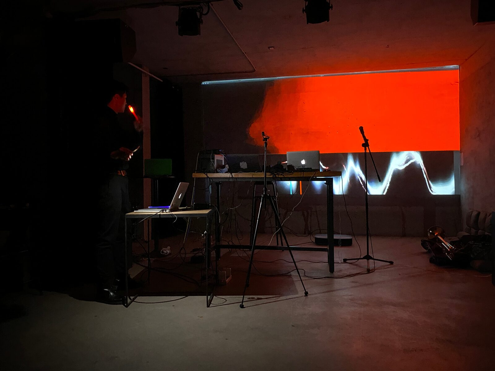
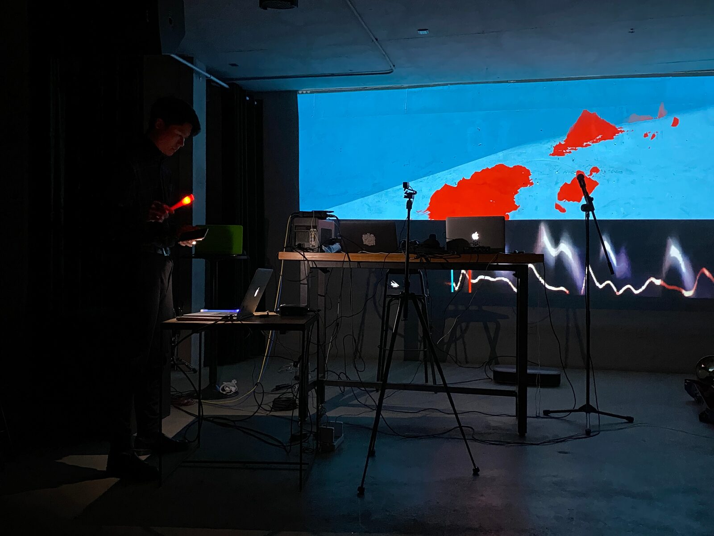

Flowing Light
1.Project Author
Ma Shihua
2.Project Title
Flowing Light-Audiovisual Performance
3. Conference Abstraction(Program Notes)
The audiovisual content in "Flowing Light" is presented as a fantasy scene composed of virtual landforms and ambient sounds. It’s based on the author's creative intention to guide the order in the virtual space with the light of real space. Through digital means, the author transforms ordinary illumination light into a control source, forming a deep-seated sensory penetration and highly integrated audio-visual performance.
2. BIO
Ma Shihua, a new media artist, a teacher of electronic music composition in the Composition Department of China Conservatory of Music, a doctorate in electronic music composition of the Central Conservatory of Music.
He focuses on studying computer music and audiovisual art. As a cross-media artist, he continues to publish works in important art events. His interactive multimedia works have won awards in the MUSICACOUSTICA BEIJING composition competition, and he has given speeches on Asian New Media Art Forum. His new media music works such as Cinemagic, Boundless, Hymn for creators have been staged in many art events in China, the United States, and Europe, including MUSICACOUSTICA BEIJING, Shanghai Electronic Music Week, Poland Audio ART FEStival, 2016 IEMC, 2018 ISCM, 2020 ICMC, etc.His installation art works Sons-Paysahes and Mimetic Still-Life were exhibited in 2015 B3+Beijing moving image Exhibition (Central Academy of Fine Arts Art Museum), 2018 China Music New Media Alliance Installation Exhibition and other events.
3.Media
https://vimeo.com/534912713



